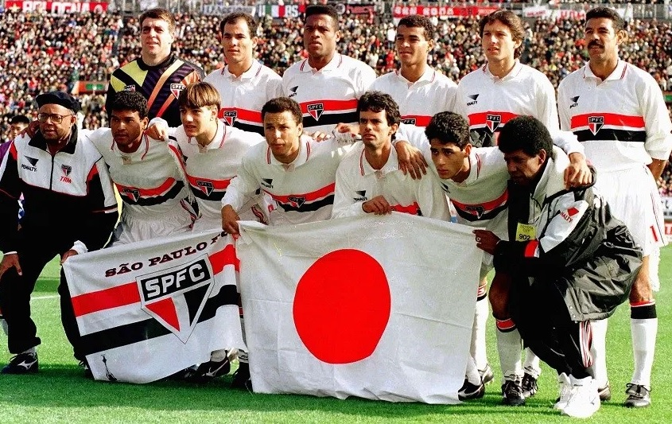

|  | |
O CONQUISTADOR DA AMÉRICAO São Paulo era dirigido pelo mestre Telê Santana e vivia o auge de sua boa fase. O time tinha como destaques o goleiro Zetti, os laterais Vitor e Cafu, o zagueiro Ronaldão, o volante Cerezo, os meias Palhinha e Raí e o atacante Müller. O Barcelona saiu na frente logo aos 12 minutos com um golaço de Stoichkov, que dominou a bola na entrada da área e chutou de pé esquerdo no ângulo de Zetti. O que parecia que seria uma goleada do Barça não se desenhou. O São Paulo controlou as ações no meio-de-campo com a eficiência de Cerezo e Pintado, o zagueiro Ronaldão tomou conta da defesa e, no ataque, brilhou o talento de Müller e Raí. O gol do empate do São Paulo saiu ao 27 minutos do primeiro tempo, quando Müller deu um giro de corpo que enganou o lateral Ferrer e cruzou para Raí completar para o gol. No segundo tempo, o Barcelona sentiu o domínio do São Paulo e pouco ameaçou. Tanto que o técnico Cruyff tirou um atacante (Beguiristain) para colocar mais um zagueiro (Nadal) e liberar Guardiola para criar. Não deu certo. Mas foi com o histórico gol de falta de Raí que o São Paulo chegou à vitória. Aos 34 minutos do segundo tempo, o camisa 10 fez a jogada combinada com Cafu e chutou cruzado, sobre a barreira, enganando Zubizarreta. |
|
| Desenvolvido por Renan Azevedo Carvalho - 2023 |